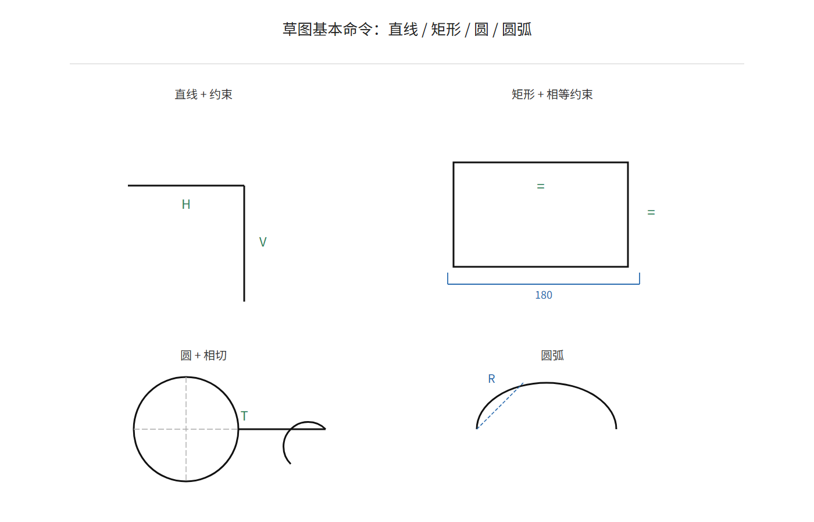

F2 草图：直线、圆、矩形、圆弧
这一部分讲什么
SolidWorks 的建模方式：先在平面上画二维草图（直线、圆、矩形、圆弧），再把草图"拉"成三维实体。所以草图命令是每天都要用的基本功。这一部分学会六个最常用的命令和快捷键。

草图的基本流程
- 选基准面（比如前视基准面）→ 点「草图」标签 → 「草图绘制」
- 画线、圆、矩形等（下方有快捷键）
- 画完点右上角「退出草图」（或点确认符号）
快捷键进入/退出草图按键盘 S 键，弹出快捷命令栏，比找按钮快得多。
六个基本命令
| 命令 | 按钮位置 | 用途 |
|---|---|---|
| 直线 | 草图 → 直线 | 画直线段、折线 |
| 圆 | 草图 → 圆 | 画圆（先点圆心，再拉半径） |
| 矩形 | 草图 → 矩形 | 画矩形（对角线两点） |
| 圆弧 | 草图 → 三点圆弧 | 画圆弧（依次点起点、终点、弧上一点） |
| 中心线 | 草图 → 中心线 | 画辅助线（虚线），做对称、旋转轴时用 |
| 智能尺寸 | 草图 → 智能尺寸（或 D 键） | 标尺寸，让线有确定长度（下一部分细讲） |
快捷键
| 按键 | 功能 |
|---|---|
| L | 直线 |
| C | 圆 |
| R | 矩形 |
| D | 智能尺寸 |
| Ctrl+Z | 撤销 |
| Esc | 结束当前命令 |
命令名称可通过按钮悬停提示查询，使用频率提高后自然掌握。
捕捉与推理线
画线时出现的虚线、符号，是软件在"提醒"你：
- 红色/绿色小方块：线的端点或中点，鼠标放上去自动"吸"住
- 虚线虚线：对齐提示（跟某条线水平/垂直对齐）
- 竖直/水平符号：当前线正好竖直或水平
意思出现这些提示时直接点下鼠标，软件自动帮你对齐、连接，画出来的图又准又快。
练习
练习 1（10 分钟）：新建草图，画一个矩形 + 一个圆 + 一条直线，再撤销重画两遍，熟悉快捷键。
练习 2（30 分钟）：画"连接板草图"——一个 120×80 的矩形，四角各一个 Φ10 圆（圆心距离边 10mm），中心一个 Φ20 圆。先不标尺寸，只把形状画出来。
没有电脑的同学：用方格纸画练习 2 的草图，标注尺寸，拍照保存。
参考资料
官
官方草图绘制概念
官方对草图概念的解释：草图是什么、尺寸和几何关系怎么起作用。
https://help.solidworks.com/2026/chinese-simplified/SolidWorks/acadhelp/c_moving2d3d_sketching_concepts.htm
官
官方草图（SW 2026 帮助）
草图命令总入口，哪个命令不会点哪个。
https://help.solidworks.com/2025/Chinese-Simplified/SolidWorks/sldworks/c_Sketch.htm
视
自检
- 能独立画出直线、矩形、圆、圆弧并修剪成型，草图线没有多余交叉
- 会用 Ctrl 快速切换命令、Esc 退出命令的快捷键
- 画完的草图能选中并拖动端点，几何关系保持正常
常见问题
- 画不了线/命令灰的：多半没进草图模式。先点「草图绘制」，再画。
- 退出草图按钮找不到：右上角有个勾，点它；或按 Esc 再点确认。
- 圆画出来是椭圆：视角歪了。按 Ctrl+7 切回正视角。
- 线画歪了：画的时候看竖直/水平提示，出现再点下。